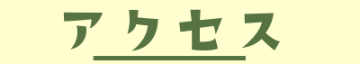

<section id="page-access">
        <!--title-->
    <div class="sub-title">
        
    </div>

    <div class="carpet">                
<!--Google mapさん-->
        <div class="map">
            <iframe src="https://maps.google.co.jp/maps?f=q&amp;source=s_q&amp;hl=ja&amp;geocode=&amp;q=%E6%B2%96%E7%B8%84%E9%AB%98%E5%B0%82&amp;aq=&amp;sll=34.728949,138.455511&amp;sspn=46.143599,81.123047&amp;brcurrent=3,0x34e454dbb8f7d6e7:0x5358b159af6b36da,0&amp;ie=UTF8&amp;hq=&amp;hnear=&amp;t=m&amp;iwloc=A&amp;ll=26.526114,128.03118&amp;spn=0.006295,0.006295&amp;output=embed&amp;z=13" class="googlemap">
            </iframe>
        </div>
<!--車でお越しの方へ-->
        <div class="by_car">
            <div class="sub-title">
                
            </div>
            <div class="sentence">
                <p>宜野座インターから国道329号線を道なりに北上してください。<br>約15分で本校が見えます。
                </p>
            </div>
        </div>
<!--バスでお越しの方へ-->
        <div class="by_bus">
            <div class="sub-title">
                
            </div>
            <div class="sentence">
                <p>最寄りバス停は<span class="accent">「第二辺野古」</span>です。
                </p>
            </div>
        </div>
    </div>
</section>